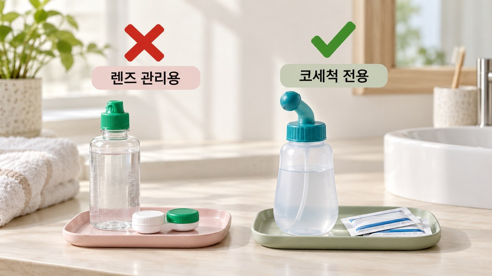
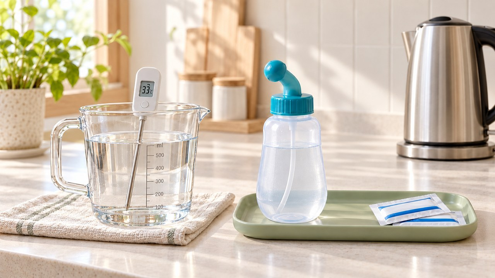
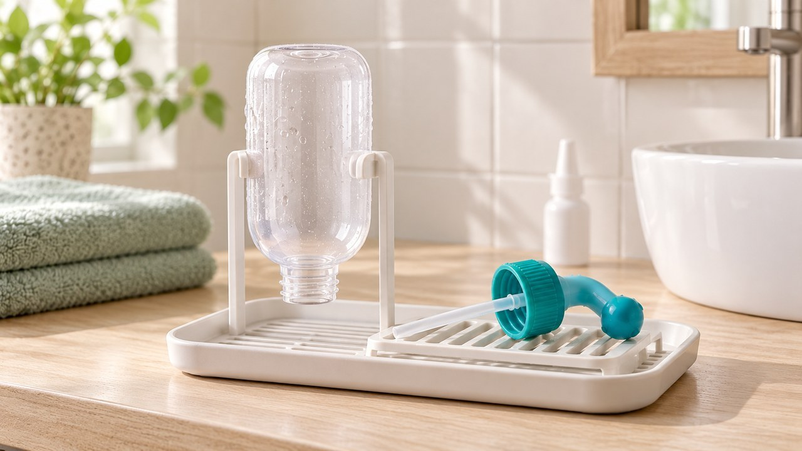

이 포스팅은 네이버 쇼핑 커넥트 활동의 일환으로, 판매 발생 시 수수료를 제공받습니다.
코세척 식염수 고를 때 “렌즈용 쓰면 안 될까?” 방부제가 코에 위험한 이유

찬 바람이 불자마자 코안이 꽉 막혀서
밤새 입을 벌리고 주무신 적 있으시죠?
답답한 마음에 욕실 선반에 놓인 식염수를 집어 들고
그대로 코를 씻으려다 멈칫하게 됩니다.
성분표를 보면 똑같은 0.9% 소금물인데
콘택트렌즈 헹구는 식염수를 코에 넣으면
왜 코점막이 화끈거리고 위험해지는 걸까요?
오늘 그 결정적인 차이를 시원하게 짚어드립니다.

가을철 잡초 꽃가루와 큰 일교차가 겹치면
국내 성인 20.9%가 겪는 알레르기비염뿐 아니라
만성 비염의 57%를 차지하는 온도 과민 반응까지 겹쳐
콧속 점막이 유독 예민하게 부어오릅니다.

이때 콘택트렌즈 세척용 식염수를 쓰면 안 되는 이유는
렌즈 보관용 의약외품 안에 세균 번식을 막으려고 넣은
폴리헥사메틸렌비구아니드나 염화벤잘코늄 같은 보존제가
포함되어 있는 경우가 많기 때문입니다.

이 보존제 성분이 여린 코점막에 직접 닿으면
점막 표면을 자극해 따가움과 건조함을 부르고
콧물과 먼지를 밖으로 쓸어내는 섬모 움직임까지
둔하게 만들 수 있어 각별히 조심하셔야 합니다.

코안을 씻어낼 때는 방부제가 전혀 들어 있지 않은
비강·관류용 0.9% 멸균생리식염수를 쓰시거나
1회분씩 포장된 코세척 전용 분말을
안전한 물에 정량대로 녹여서 사용하셔야 합니다.
비강 상피세포를 용액에 직접 담근 시험관 실험에서는
농도가 3.0% 이상일 때 10분 만에 섬모운동이 멈추고
(7.0%에서는 5분 만에 정지) 세포가 수축했듯이,
집에서 주방 소금을 눈대중으로 타면 농도 조절이 어렵거든요.

또한 전용 분말을 녹일 때 일반 수돗물을 그대로 쓰면
배관 속 미생물이 비강으로 들어갈 위험이 있으니,
증류수·멸균수를 쓰거나 수돗물을 팔팔 끓는 상태로 1분 이상
끓인 뒤 30~35℃로 미지근하게 식혀서 사용하세요.
무방부제 멸균생리식염수는 뚜껑을 여는 순간부터
공기 중 세균에 오염될 수 있으므로
반드시 새로 개봉한 것을 사용하고 남은 잔액은 재사용하지 않는
위생 원칙을 지키는 것이 코점막 보호의 핵심입니다.
식염수가 준비되었다면 세면대 앞에서
고개를 앞으로 45도 숙인 자세를 취한 뒤,
숨을 잠시 멈추고 입을 벌린 상태(아~ 소리)에서
만성 비부비동염 기준 1회 200mL 이상 부드럽게 흘려보냅니다.

코세척 자체로도 드물게 코 통증이나 코피가 날 수 있고,
도중에 침을 삼키거나 용기를 세게 짜거나 직후에 코를 세게 풀면
이관으로 물이 역류해 귀가 아플 수 있으니 꼭 피해주시고
고개를 앞뒤좌우로 기울여 남은 물기를 먼저 털어내세요.

사용한 용기는 깨끗이 씻어 뒤집어서 완전히 말려두고,
국소 스테로이드 분무제를 함께 쓰신다면 코세척을 먼저 한 뒤
같은 쪽 눈 방향으로 뿌리고 5초간 숨을 멈추며 최소 5일간
꾸준히 사용해야 점막 염증이 차분히 가라앉습니다.

만약 증상이 5일 뒤 더 심해지거나 10일 이상 이어지면서
누런 콧물과 광대·이마 통증, 38℃ 이상 발열이 나타나거나,
코막힘과 후각 저하가 12주 이상 계속될 때는
자가 세척에만 의존하지 말고 이비인후과 점검을 받으셔야 합니다.

오늘 저녁에는 욕실에 놓인 식염수 용기 겉면에서
렌즈 관리용 의약외품인지 비강·관류용 일반의약품인지부터
가볍게 확인하고 미지근한 30~35℃ 온도를 맞춰보세요.
여러분은 평소 완제품 멸균생리식염수를 쓰시나요,
아니면 끓여 식힌 물에 코세척 전용 분말을 타서 쓰시나요?
댓글로 여러분의 환절기 코 관리 습관을 편하게 남겨주세요 😊

🍯 함께 읽으면 도움 되는 꿀단지 건강 이야기
“스프레이 없으면 숨을 못 쉬어요” 비염 스프레이 끊기 전 확인할 5일 사용 원칙
1. 질병관리청 국가건강정보포털 (KDCA) — 비부비동염 생리식염수 코 세척(30~35℃, 1회 200mL 이상, 고개 45도 자세) 및 국소 스테로이드제 지침
2. 질병관리청 국가건강정보포털 (KDCA) — 만성비염 및 알레르기비염 유병률(20.9%, 혼합·비알레르기 특성 57%) 기준
3. 식품의약품안전처 의약품안전나라 (MFDS) — 의약외품 범위 지정 고시(콘택트렌즈관리용품) 및 관류용 멸균생리식염수(잔액 재사용 금지) 허가사항
4. 대한비과학회지 (Journal of Rhinology) — 인간 비강 점막 상피세포 시험관 실험에서 식염수 농도(0.9% vs 3.0%·7.0%)에 따른 섬모운동횟수(CBF) 변화
5. 미국 질병통제예방센터 (CDC) — 비강 세척 시 수돗물 1분 이상 가열·식힘 및 증류수·멸균수 사용 안전 지침
#코세척 #코세척식염수 #환절기비염 #알레르기비염 #코세척방법 #코세척기 #부비동염증상 #코막힘뚫는법 #코세척수돗물 #코세척분말 #생리식염수코세척 #가을비염관리 #비염코세척 #에디터혀니 #꿀단지